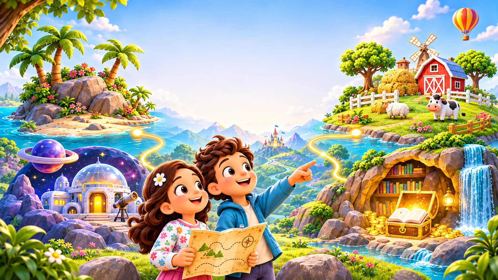
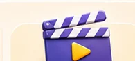
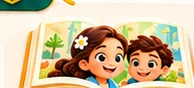
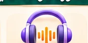
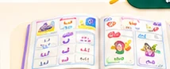
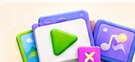
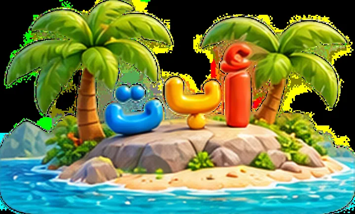
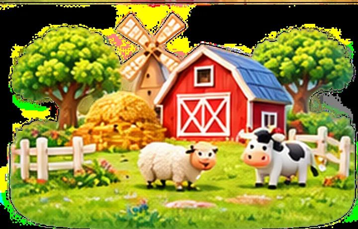
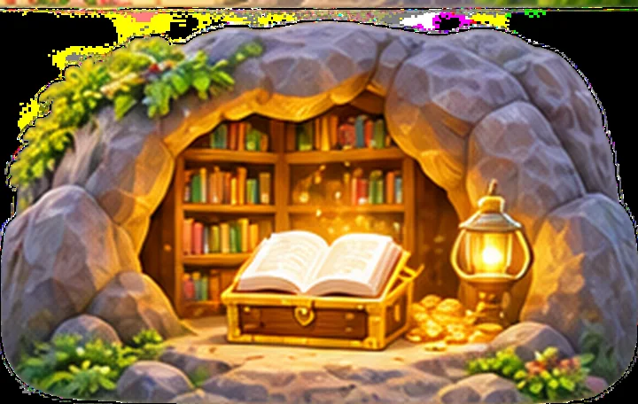

السلسلة الصوتية للأطفال
من أول صوت… إلى كلمة
يقرؤها طفلك ويكتبها
تبدأ رحلة الطفل مع العربية حين يسمع الصوت، ويتعرّف إلى حرفه، ويربط الكلمة بصورة ومعنى.
والسكون٢ كوكب المدود٣ كنز القراءة٤
ومن هذه البداية، تتدرج السلسلة الصوتية للأطفال في تعليم القراءة والكتابة للناطقين بغير العربية من عمر ٥ إلى ٧ سنوات.
تضم السلسلة أربعة مستويات في ثمانية كتب أساسية: كتاب الطالب وكتاب التدريبات لكل مستوى. وترافقها قصص وأنشطة وصوتيات وأغانٍ ومواد مرئية تساعد الطفل على الممارسة في الصف والبيت.
بداية تراعي تعلّم لغة جديدة
قد يفهم الطفل الكلمة حين يسمعها ويرى صورتها، قبل أن يستطيع قراءتها أو كتابتها كاملة. لذلك تتدرج المهمة معه: يستمع، ويلاحظ، ويردّد، ويميّز، ثم يقرأ ويكتب ما يناسب مرحلته.
في درس الحرف، مثلًا، قد يتعرّف الطفل إلى كلمات عدة، بينما يقتصر المطلوب منه في الكتابة على تتبّع الحرف وكتابته منفردًا وفي أول الكلمة، وتتسع المهمة الكتابية خطوةً خطوة عبر المستويات.
يستمع١
يلاحظ٢
يردّد٣
يميّز٤
يقرأ ويكتب٥
ماذا يتعلّم الطفل؟
فهم الكلمات من خلال الصور والمواقف.
التمييز بين الحركات القصيرة والمدود، والاستماع إلى الفروق بينها ونطقها.
الانتقال في القراءة من الحروف والمقاطع إلى الكلمات والجمل البسيطة.
التدرّج في كتابة الحروف، ثم الكلمات والجمل البسيطة.
استخدام ما تعلّمه في القصص والأغاني والألعاب وأنشطة المراجعة.
شاهد السلسلة من داخل الدرس
تتيح لك النماذج أن ترى ما يسمعه الطفل ويشاهده، وما يُطلب منه أن يؤديه في كل نشاط.

درس بالرسوم الحركية
شاهد نموذجًا يجمع الصورة والصوت والحركة في تقديم عناصر الدرس.

قصة مصوّرة أو متحركة
تعرّف إلى طريقة حضور الكلمات والمواقف في قصة تناسب الطفل.

مقتطف صوتي
استمع إلى نموذج من المحتوى المسموع وطريقة تقديمه للطفل.

صفحات من كتاب الطالب والتدريبات
شاهد تقديم الحرف والكلمات المصوّرة، ثم أنشطة التمييز والتتبّع والكتابة والمراجعة.

نماذج من المواد المصاحبة
تصفّح قصة ونشاط تلوين، واطّلع على نموذج من الألعاب والمراجعة وتوجيهات المعلم.
كيف يجري الدرس؟
في نموذج درس الباء، يسمع الطفل الصوت والكلمات، ويتعرّف إلى الصور، ويردّد، ويختار ما يطابق ما سمعه. ثم يتتبّع الحرف ويكتبه بالمقدار المطلوب في هذا المستوى، ويشارك في نشاط يعيد إليه المهارة. ويمنحه كتاب التدريبات فرصًا أخرى للممارسة.
🎧
يسمع الطفل الصوت والكلمات
🐤
يتعرّف إلى الصور
🗣️
ويردّد
ب
ويختار ما يطابق ما سمعه
ب
ثم يتتبّع الحرف ويكتبه
📝
ويشارك في نشاط يعيد إليه المهارة
تخدم الأنشطة المختلفة هدفًا تعليميًا واحدًا، مع وضوح ما يُنتظر من الطفل في كل خطوة.
أربعة مستويات وتدرّج واضح

١جزيرة الحروف
التعرّف إلى أصوات الحروف وربطها بالصور والكلمات.
تتبّع الحرف وكتابته منفردًا وفي أول الكلمة.
استفسر عن المستوى المناسب
٢مزرعة الحركات والسكون
التدرّب على الحركات الثلاث والسكون وتمييز أصواتها.
تعزيز كتابة الحرف أول الكلمة مع الحركات، ثم بدء كتابته وسط الكلمة في وحدات السكون.
استفسر عن المستوى المناسب٣
كوكب المدود
التمييز بين الصوت القصير والطويل، والتدرّب على المدود بالألف والواو والياء.
تتبّع الحروف وكتابتها في أوضاعها كلها، مع إضافة الكتابة في آخر الكلمة.
استفسر عن المستوى المناسب
٤كنز القراءة
تعلّم الظواهر الصوتية وتوظيف المكتسبات في قراءة الكلمات والجمل وفهمها.
البدء بكلمات بسيطة، ثم التدرّج حتى كتابة جمل بسيطة في نهاية المستوى.
استفسر عن المستوى المناسبيساعد المعلم في اختيار نقطة البداية وفق مهارات الطفل الحالية، وما تتطلبه أنشطة كل مستوى.
استفسر عن المستوى المناسبلكل مكوّن دور في رحلة الطفل
كتاب الطالب
يقدّم الحروف والأصوات والكلمات والأنشطة الأساسية في مسار منظم.
كتاب التدريبات
يمنح الطفل فرصًا إضافية للتمييز والتتبّع والكتابة والمراجعة.
القصص المصاحبة
تعيد الكلمات والمهارات في حكايات مصوّرة ذات معنى.
كتاب التلوين
يربط الصور والكلمات بنشاط يدوي يتيح الحديث والمراجعة.
الصوتيات والأغاني
تقدّم نموذجًا واضحًا للاستماع والترديد، وتعيد الأصوات والكلمات بإيقاع يناسب الطفل.
الرسوم الحركية
تجمع الصورة والصوت والحركة لخدمة هدف الدرس.
الألعاب والأنشطة
تدعو الطفل إلى المطابقة والاختيار والتمييز والمشاركة.
دليل المعلم
يوضح أهداف الدروس وخطوات تقديم الأنشطة ومساندة الطفل.
كيف تلاحظ تقدّم طفلك؟
تتيح أنشطة الدروس والمراجعة للمعلم أن يلاحظ ما يستطيع الطفل أداءه، وما يحتاج فيه إلى تدريب إضافي: هل يميّز الصوت؟ هل يختار الصورة المناسبة؟ هل يقرأ ما تعلّمه؟ وهل يكتب المقدار المطلوب منه في مرحلته؟
تساعد مشاركة هذه الملاحظات مع ولي الأمر على اختيار ممارسة منزلية قصيرة ومناسبة، مثل الاستماع والترديد، أو مراجعة الصور، أو قراءة قصة مع الطفل.
كيف تلاحظ تقدّم طفلك؟✦ ✦ ✦
🎧 هل يميّز الصوت؟
🖼️ هل يختار الصورة المناسبة؟
📖 هل يقرأ ما تعلّمه؟
✏️ وهل يكتب المقدار المطلوب منه في مرحلته؟
في الصف والبيت
لولي الأمر
استمع مع طفلك، وردّدا الكلمات، وتحدّثا عن الصور، وشاركه قصة أو نشاط تلوين، دقائق منتظمة من الممارسة المرتبطة بدرسه تساعده على استرجاع ما تعلّمه.
للمعلم
ابدأ بهدف الدرس في كتاب الطالب، ثم اختر من التدريبات والصوتيات والقصة والفيديو ما يخدم هذا الهدف. وراعِ ما يستطيع الطفل قراءته أو كتابته في مستواه.
للمدارس والمؤسسات
اطّلعوا على أهداف المستويات ونماذج الكتب والمواد المصاحبة، ثم استفسروا عن المكوّنات المتاحة وما يناسب برنامجكم.
أسئلتك قبل البداية
طفلي يعرف أسماء بعض الحروف؛ ماذا تضيف له السلسلة؟
تساعده على ربط الحرف بصوته والكلمات التي يسمعها، ثم التدرّج في الحركات والمدود والقراءة والكتابة وفق مهاراته.
طفلي يفهم الكلمة لكنه لا يستطيع كتابتها كاملة؛ هل تناسبه السلسلة؟
نعم. لا تفترض السلسلة أن فهم الكلمة يعني القدرة على كتابتها. يبدأ المطلوب الكتابي بالحرف، ويتسع تدريجيًا حتى الكلمات والجمل البسيطة.
لماذا يوجد كتاب للطالب وآخر للتدريبات؟
يقدّم كتاب الطالب المحتوى والأنشطة الأساسية، ويمنح كتاب التدريبات الطفل فرصًا أخرى لتثبيت المهارة ومراجعتها.
هل ترتبط القصص والتلوين بالدروس؟
تعود القصص والأنشطة إلى كلمات المستوى ومهاراته، وتتيح للطفل أن يلتقي بها في سياقات وصور جديدة.
كيف تُستخدم الفيديوهات؟
تُستخدم لتقديم عنصر أو دعمه بالصورة والصوت والحركة، ثم يعود الطفل إلى المشاركة والترديد والقراءة والكتابة بحسب هدف الدرس.
كيف أختار المستوى المناسب؟
انظر، بمساعدة المعلم، إلى قدرة الطفل على السماع والتمييز والقراءة والكتابة، ثم قارنها بأهداف المستويات.
هل توجد أدلة للمعلمين؟
تتضمن خطة السلسلة دليلًا لكل مستوى يوضح الأهداف وخطوات تقديم الأنشطة.
شاهد النماذج… ثم اختر خطوتك التالية
تصفّح صفحات الكتب، واستمع إلى المحتوى، وشاهد طريقة تقديم الدرس. وإذا رغبت في معرفة المستوى أو الحزمة المناسبة، أخبرنا هل تسأل لطفلك، أم لصفّك، أم لمؤسستك.